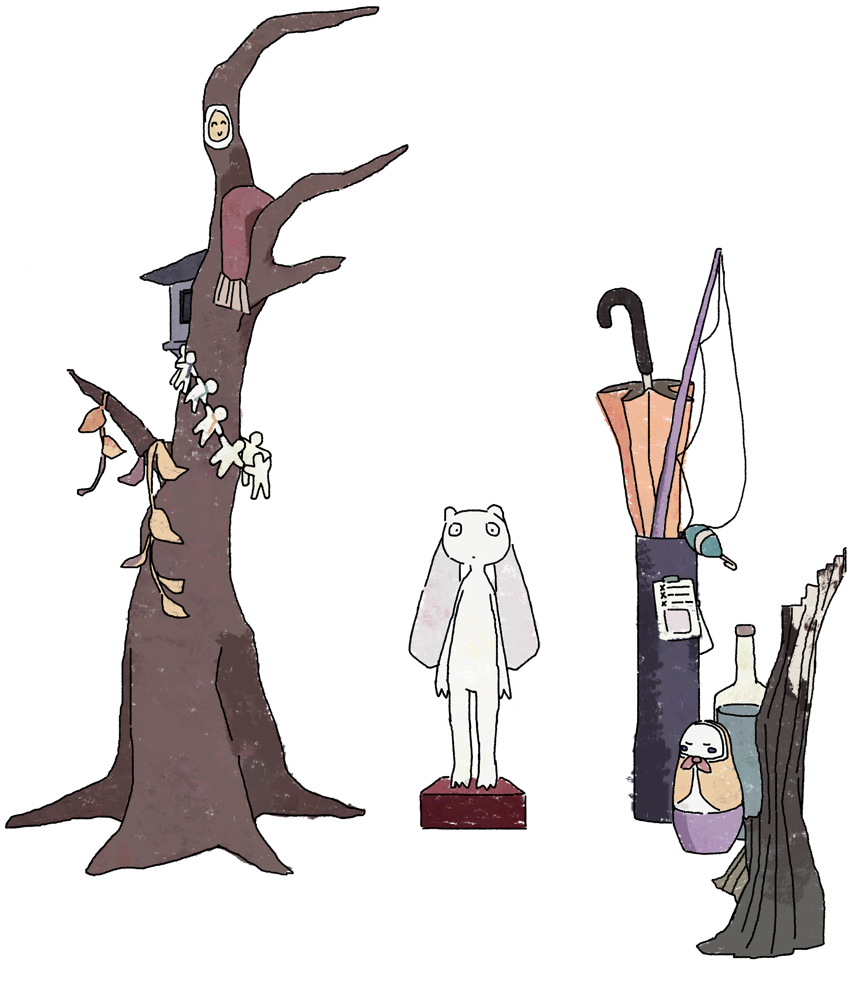
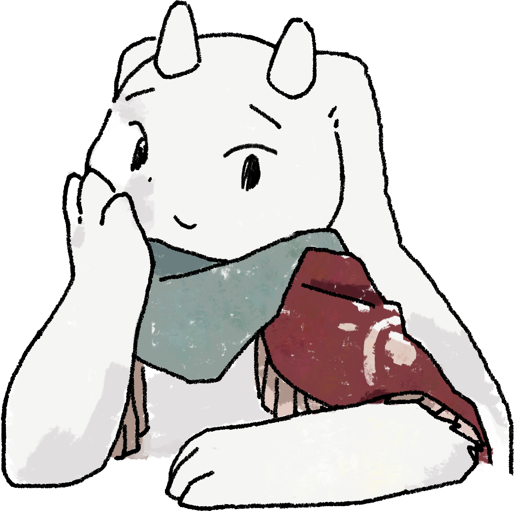

© 2023 Made with love by Christin Park




Hey there! I'm a memory keeper.
You found Claud!
"You want to know about me??
People call me a memory keeper, but you can call me Claud (it's pronounced like 'cloud')!
Heh heh... people always come to me to hear about others' memories, but my most favorite memories to share are my own. Here's one of my favorites:
When I was younger, I studied to be a historian of humans. But during my studies, I realized that the smaller memories and progress of people and their works were much more interesting than their bigger 'accomplishments'. That's why I changed over and became a memory keeper!
However, my time in schooling was not wasted. Once, I took a class to help me understand why humans create history in the way they do. Some people are motivated by self-fulfillment, others by external pressures, some by spirituality, and so on. But one perspective that stuck with me is best summarized by a quote by a human named Alan Watts:
'The meaning of life is just to be alive. It is so plain and so obvious and so simple. And yet, everybody rushes around in a great panic as if it were necessary to achieve something beyond themselves.'
I'm always scavenging for cool memories to keep. Whatever your motivation may be, don't forget to live life! It makes my job as a memory keeper more amusing."
-Claud
People call me a memory keeper, but you can call me Claud (it's pronounced like 'cloud')!
Heh heh... people always come to me to hear about others' memories, but my most favorite memories to share are my own. Here's one of my favorites:
When I was younger, I studied to be a historian of humans. But during my studies, I realized that the smaller memories and progress of people and their works were much more interesting than their bigger 'accomplishments'. That's why I changed over and became a memory keeper!
However, my time in schooling was not wasted. Once, I took a class to help me understand why humans create history in the way they do. Some people are motivated by self-fulfillment, others by external pressures, some by spirituality, and so on. But one perspective that stuck with me is best summarized by a quote by a human named Alan Watts:
'The meaning of life is just to be alive. It is so plain and so obvious and so simple. And yet, everybody rushes around in a great panic as if it were necessary to achieve something beyond themselves.'
I'm always scavenging for cool memories to keep. Whatever your motivation may be, don't forget to live life! It makes my job as a memory keeper more amusing."
-Claud
You found puzzle pieces!
I love games!!! I love puzzles and story-focused games. :D
You found cooking equipment!
I love food and cooking. :D
I've experimented with cooking from a lot of different cuisines, and I think my favorites now are South East Asian and Mediterranean dishes. But... I've still got a lot of foods to try!
My most favorite dish to share about is the calzone (the last image on the carousel). It was a cooking challenge--to create a dish using only ingredients mentioned in NieR:Replicant. I limited myself to beans, wheat, eggplant, tomato, chicken, mint and thyme (I mean... royal ferns), salt, berries, and mushrooms. I also made a cookie because it's Yonah's favorite food. :D
I love sharing a conversation and a meal with people, whether we cook or order from a restaurant. If you ever want to grab food, just know that I DON'T KNOW HOW TO USE CHOPSTICKS AHHHHHHH
But I'm totally down to getting food. :)
I've experimented with cooking from a lot of different cuisines, and I think my favorites now are South East Asian and Mediterranean dishes. But... I've still got a lot of foods to try!
My most favorite dish to share about is the calzone (the last image on the carousel). It was a cooking challenge--to create a dish using only ingredients mentioned in NieR:Replicant. I limited myself to beans, wheat, eggplant, tomato, chicken, mint and thyme (I mean... royal ferns), salt, berries, and mushrooms. I also made a cookie because it's Yonah's favorite food. :D
I love sharing a conversation and a meal with people, whether we cook or order from a restaurant. If you ever want to grab food, just know that I DON'T KNOW HOW TO USE CHOPSTICKS AHHHHHHH
But I'm totally down to getting food. :)


You found an Earth Pass!
The Earth Pass is an object in the Pixar movie "Soul". When a new soul finds their personality and spark in the
Great Before (an existence before life on Earth), they unlock an Earth Pass, meaning they are ready
to pursue a life on Earth.
"Soul" is one of my favorite movies which made me realize that life is not about just reaching a goal or because of a "spark", and reaching it does not ensure fulfillment. I learned that obsessing over one thing disallowed me to appreciate what just is. It is just as important to be enjoying life in the present, and to not overlook the little things in between!
Here is one of my favorite quotes from the movie, the retelling of a fish story:
“I heard this story about a fish, he swims up to an older fish and says: ‘I’m trying to find this thing they call the ocean.’ ‘The ocean?’ the older fish says, ‘That’s what you’re in right now.’ ‘This’, says the young fish, ‘this is water. What I want is the ocean!’” (https://www.youtube.com/watch?v=Pg7Zit2Thks).
Among some of my other favorite movies/shows are Made in Abyss, WALL-E, Coco, and A Silent Voice (yes, I love cartoons). :)
"Soul" is one of my favorite movies which made me realize that life is not about just reaching a goal or because of a "spark", and reaching it does not ensure fulfillment. I learned that obsessing over one thing disallowed me to appreciate what just is. It is just as important to be enjoying life in the present, and to not overlook the little things in between!
Here is one of my favorite quotes from the movie, the retelling of a fish story:
“I heard this story about a fish, he swims up to an older fish and says: ‘I’m trying to find this thing they call the ocean.’ ‘The ocean?’ the older fish says, ‘That’s what you’re in right now.’ ‘This’, says the young fish, ‘this is water. What I want is the ocean!’” (https://www.youtube.com/watch?v=Pg7Zit2Thks).
Among some of my other favorite movies/shows are Made in Abyss, WALL-E, Coco, and A Silent Voice (yes, I love cartoons). :)
You found Moda!
"The one with wings is Skyta.
The one with a long tail is Wini.
The one who guards the cookies is Crolo.
The one who is nervously hidden is Zef.
The ones who are siblings are Moop and Poom.
Claud is my best friend!!! (and a memory keeper)
And I’m Moda!
...How was my memory keeping? Claud says memory keeping is more than just memorization. But... I don't really understand what he means by that.
One day, I want to be a memory keeper too...”
-Moda
The one with a long tail is Wini.
The one who guards the cookies is Crolo.
The one who is nervously hidden is Zef.
The ones who are siblings are Moop and Poom.
Claud is my best friend!!! (and a memory keeper)
And I’m Moda!
...How was my memory keeping? Claud says memory keeping is more than just memorization. But... I don't really understand what he means by that.
One day, I want to be a memory keeper too...”
-Moda
You found Skyta!
“yo .
its skyta.
eheheheeehe ...
claud doesnt like it when i steal his cookies.
but … theyre delishoush .”
-Skyta
"ehehhhehe. hee.
looks like i took the last cookie .
but........ i can share it with u.
if u want."
-Skyta
Do you want to eat the cookie?
its skyta.
eheheheeehe ...
claud doesnt like it when i steal his cookies.
but … theyre delishoush .”
-Skyta
Wait, what was it that Claud said earlier?
"Look, I run on cookies.
If my cookie jar runs empty, my poor diet will make me forget things.
(clearing your cookies/cache resets Claud's memory of you!)"
-Claud
"Look, I run on cookies.
If my cookie jar runs empty, my poor diet will make me forget things.
(clearing your cookies/cache resets Claud's memory of you!)"
-Claud
"ehehhhehe. hee.
looks like i took the last cookie .
but........ i can share it with u.
if u want."
-Skyta
Do you want to eat the cookie?
You found a cookie jar!
"Look, I run on cookies.
If my cookie jar runs empty, my poor diet will make me forget things.
(clearing your cookies/cache resets Claud's memory of you!)"
-Claud
If my cookie jar runs empty, my poor diet will make me forget things.
(clearing your cookies/cache resets Claud's memory of you!)"
-Claud
You found a paper crane!
A paper crane to show my love for creating art! The medium I've worked the most with
is digital art, but recently I've been trying to add other art mediums into the engineering projects
I work on (see personal projects!).
I don't draw as much now because of other priorities, but it is still something I want to get back into when I find a bit more time to sit down and properly learn. In the mean time, here is a random artwork I've done, a pixel art drawing of my brother for his bday :D.
I don't draw as much now because of other priorities, but it is still something I want to get back into when I find a bit more time to sit down and properly learn. In the mean time, here is a random artwork I've done, a pixel art drawing of my brother for his bday :D.
Moop found you!
"HMPH... haven't you ever been told to not play around fire?
This is a memory keeper service, not a playground!!!
Well, I AM the (very) official firefighter in case people like YOU come along. So... go find some water I guess.
-Moop
Well, I AM the (very) official firefighter in case people like YOU come along. So... go find some water I guess.
-Moop
You found instruments!
I love listening to music! :D I like atmospherical songs and the sound of traditional instruments.
A lot of my favorite songs come from shows or games, so they often accompany the visuals or mood without
demanding the spotlight. I mostly listen to music during commute, so they feel like the soundtracks of life. :D
Here are some of my favorite songs:
Here are some of my favorite songs:
- City Ruins from NieR: Automata: https://www.youtube.com/watch?v=hMw-DUnR10s
- Wretched Weaponry from NieR: Automata: https://www.youtube.com/watch?v=E9c-t8hQCRo
- Prushka Sequence from Made in Abyss S2: https://www.youtube.com/watch?v=c09gHQ08CtI
- Tommorow from Made in Abyss S1: https://www.youtube.com/watch?v=W8Si0g20h_Q
- Aethervox from Drakengard 3: https://www.youtube.com/watch?v=fgCvZ_gLpU0
- Black Song from Drakengard 3: https://www.youtube.com/watch?v=si_RYfvPrKo
- Grandma from NieR: Replicant: https://www.youtube.com/watch?v=ZrARI47rQc4
- The Worst by Polyphia (just the riff): https://www.youtube.com/watch?v=8YqvOLfkwq8
You found... a mask?
There is a character-focused story that I want to write and maybe turn into a indie game in the future.
I'll work on a website to explain my idea more (picture below). :)
Something I really love to do is to "give life" to characters. For example, when I played sandbox games when I was younger (specifically singleplayer Minecraft and Growtopia), I wrote a lot of storylines that had integrated game elements (parkour, puzzles). When I was more into art, I liked drawing/designing characters and thinking about the little details about them. I also had a lot of fun designing and writing the dialogue for the characters who live in this memory keeper hideout. And of course, I really loved making up little stories for my stuffed animals when I was a kid. :,)
It's a feeling that I don't want to completely abandon because of the fact that I have other priorities. I think I would have a lot of fun making an indie game with a small group of friends with this idea. I really want to tell a meaningful story and to fully flesh-out the idea I have of the characters I'm thinking about. I do have other priorities in life right now, so I can't work on something with this scale by myself with the free time I have, but the world builds up in my mind when I daydream. :)
This quote by OMOCAT (creator of OMORI) sums up my thoughts towards games well:
"Games do everything that art is supposed to do and beyond. It mixes visuals, writing, music and sound, storytelling, and interaction and puts it all in one package… I want to get across the idea that game-making is an art medium, I am creating an art piece called OMORI and my medium is a video game." -OMOCAT
Fun fact: Claud's clothes were sewn by the character in a red cloak. :D
Something I really love to do is to "give life" to characters. For example, when I played sandbox games when I was younger (specifically singleplayer Minecraft and Growtopia), I wrote a lot of storylines that had integrated game elements (parkour, puzzles). When I was more into art, I liked drawing/designing characters and thinking about the little details about them. I also had a lot of fun designing and writing the dialogue for the characters who live in this memory keeper hideout. And of course, I really loved making up little stories for my stuffed animals when I was a kid. :,)
It's a feeling that I don't want to completely abandon because of the fact that I have other priorities. I think I would have a lot of fun making an indie game with a small group of friends with this idea. I really want to tell a meaningful story and to fully flesh-out the idea I have of the characters I'm thinking about. I do have other priorities in life right now, so I can't work on something with this scale by myself with the free time I have, but the world builds up in my mind when I daydream. :)
This quote by OMOCAT (creator of OMORI) sums up my thoughts towards games well:
"Games do everything that art is supposed to do and beyond. It mixes visuals, writing, music and sound, storytelling, and interaction and puts it all in one package… I want to get across the idea that game-making is an art medium, I am creating an art piece called OMORI and my medium is a video game." -OMOCAT
Fun fact: Claud's clothes were sewn by the character in a red cloak. :D
You found Poom!
"Water delivery! Water delivery! Only $109821243130313428.99 a cup!
Today we're having a $109821243130313428 discount, so you'll be getting the best deal of the day!"
And oh... we charge one dollar extra for emergencies."
-Poom
And oh... we charge one dollar extra for emergencies."
-Poom
You found Wini!
"sigh...
Life is always so busy. There is always so much that I need to do. However, when I hang around here, I temporary forget all those problems.
-Wini
Life is always so busy. There is always so much that I need to do. However, when I hang around here, I temporary forget all those problems.
-Wini